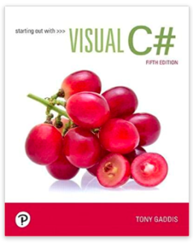

For this class, we used Visual Studio to create various forms. Here was our textbook.
For this first assignment, we had to hide some labels, then create a button that would reveal them. And I chose this little chart of some doggies to spruce it up.
This was a form that calculates the price of a conference based on the workshop and number of days spent at the workshop.
This is kind of like a dice game. You roll the two dice and can see the sum and the history of sums.
In this assignment, we explored check marks and textboxes with open responses by creating a doggie day spa form. I couldn't resist the picture of the corgi with the cucumbers over its eyes.
This was a virtual slot machine.
This was a sentence capitalizer. It was a little tricky to figure out, but I had fun decorating the form. Mind you, ChatGPT wasn't really a thing until later in this class.
This was the first time I got stuck and found myself emailing the instructor. It's a form that enters names and email addresses, deletes them, or searches for them. But I got it to run.
This assignment marks the very first time that I used AI to help me solve a coding challenge. This assignment was a little tricky because I think there were several conditions on the acceleration and breaking. I was stuck on this one and an aspect of the email address book for about two days and started to panic when I was given the green light by the instructor to use ChatGPT as a resource. I am certain that the availability of AI saved him hours of time! He told us one day that he opened his email inbox and there were over 100 emails in it. Thank goodness for these tools that help us to create and be productive!
This assignment built on top of the email address book we had made earlier, but it linked two different forms together. As with every assignment, I really enjoyed myself decorating the form.